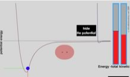

| Chapter 1.8: Interactions between He atoms and H2 molecules |
Now lets take a look at a couple of real systems. For simplicity, we begin by considering interactions between the simplest atoms hydrogen (H), and helium (He), and the simplest molecule - molecular hydrogen (H2). Hydrogen atoms have 1 proton and 1 electron, Helium atoms have 2 protons and 2 neutrons in the nucleus, and 2 electrons in their electron clouds. We will consider more complicated atoms and molecules after we discuss atomic structure in greater detail in the next chapter. One advantage of focusing on molecular hydrogen and helium is that it also allows us to introduce, compare and briefly consider (we will do much more considering later on) both van der Waals interactions and covalent bonds. When two atoms of helium approach each other LDFs come into play and a van der Waals interaction develops. In the case of He, the interaction potential energy drop is quite small (that is: the stabilization due to the interaction) and it does not take much energy to knock the two atoms apart. |
1.1 Atoms |
This energy is supplied by collisions with other He atoms. Helium melts at ~1K (−272.2 ºC) and boils at ~4K (−268.93ºC), only a few degrees above absolute zero 0K (−273.15 ºC). Meaning that at all temperatures above ~4K, there is enough kinetic energy in the atoms of the system to disrupt the van der Waals interactions between He atoms. The lack of stable interaction at these “higher” temperatures means that helium atoms do not stick together above 4K; helium is a gas at temperatures above 4K. Now let us contrast the behavior of helium with that of hydrogen (H). As two hydrogen atoms approach one another, they form a much more stable interaction (about 1000 times stronger than the He-He van der Waals interactions. In an H-H interaction, the atoms are held together by the attraction of each nucleus for both electrons. This leads to a potential energy minimum for the two interacting hydrogen atoms that is much deeper than that for He-He. Because of its radically different stability, the H-H system gets a new name, it is known as molecular hydrogen or H2, and the interaction between the H atoms is known as a covalent bond. In order to separate the hydrogen molecule back into two atoms, that is, to break the covalent bond between them, we have to supply energy. 51 This energy can take several forms: energy delivered by molecular collisions with surrounding molecules or electromagnetic energy due to the absorption of light are some of the ways covalent bonds can be broken, and we will return to them later. |
| Each H can form only a single covalent bond, leading to the formation of H-H molecules. These H-H molecules are themselves attracted to one another through LDFs, leading to van der Waals interactions. We can compare energy associated with the H-H covalent bond and the H2 – H2 van der Waals interaction. |  |
| To break a H-H covalent bond, you will need to heat the system to around 5000K. On the other hand, to break the van der Waals interactions between H2 molecules, the system temperature only needs to rise to ~20K, above this temperature H2 is a gas; the interactions between individual H2 molecules are not strong enough to resist the kinetic energy of colliding molecules. Now you may ask yourself, why does H2 boil at a higher temperature than He? Good question! The answer is addressed by the web activity on interactions. It turns out that the strengths of these types of interactions depend upon several factors, including shape of the molecule, surface area, and number of electrons. For example, the greater the surface areas shared between interacting atoms or molecules the greater the London dispersion forces experienced and the stronger the resulting van der Waals interaction. Another factors is the ability of the electron cloud to become charged, a property known as polarizability. Polarizability is related to the “floppiness” of the electron cloud, and as a rough guide, the further away from the nucleus the electrons are - the more polarizable (moveable or floppy) the electron cloud becomes. We will return to this and related topics later on. As we will see, larger molecules with more complex geometries, such as biological macromolecules - proteins and nucleic acids – can interact through more surface area and polarizable regions, leading to correspondingly stronger van der Waals interactions. |
Question to answer:
Questions for ponder:
|
At this point, you are probably (or should be) asking yourself some serious questions, such as, why don’t helium atoms form covalent bonds with one another? Why does a hydrogen atom form only one covalent bond? What happens when other kinds of atoms interact? To understand the answers to these questions, we need to consider how the structure of atoms differs between the different elements, which is the subject of the next chapter. |
1.1
Atoms |
| 27-Jun-2012 |